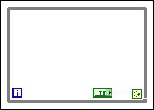
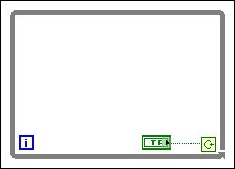
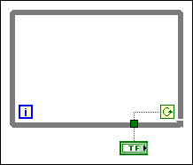

|
Note You can stop the While Loop by changing the value of the front panel control to FALSE, as shown in the following block diagram.  |
If you want the loop to check the value of a terminal on each iteration, place the terminal inside the loop.
Complete the following steps to cause the loop to check the value of a Boolean terminal every iteration.
|
Note You can stop the While Loop by changing the value of the front panel control to FALSE, as shown in the following block diagram.  |
If you wire the conditional terminal of a While Loop set to Continue if True to a Boolean terminal set to TRUE and placed outside the loop, you cause an infinite loop, as shown in the following block diagram.

You also cause an infinite loop if you wire the conditional terminal of a While Loop set to Stop if True to a Boolean terminal set to FALSE and placed outside the loop.
To stop an infinite loop, you must abort the VI by clicking the Abort button on the toolbar. Changing the value of the control does not stop the infinite loop because the value is not propagated until the loop stops and you run the VI again.